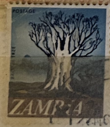
| SOURCE | TITLE| IMAGE MATCH | click to source page |
| HipStamp | Zambia 40 - Used - 2n Baobab Tree (1968) | Africa - Zambia, General Issue Stamp / HipStamp | 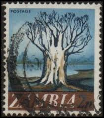 |
| HipStamp | Zambia 40 USED 1968 Baobab Tree | Africa - Zambia, General Issue Stamp / HipStamp | 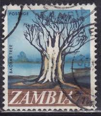 |
| The Digital Philatelist | Zambia Philately: 1968 New Currency Definitives – 2n Baobab Tree - The Digital Philatelist | 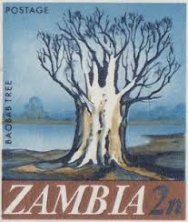 |
| Flickr | Zambia Sambia | Michael Dr Gumtau | Flickr | 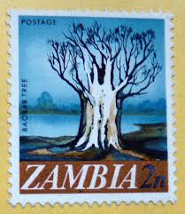 |
| agaclar.net | agaclar.net - View Single Post - Pullarda Ağaç | 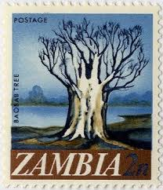 |
| eBay UK | Zambia 1968 QE2 2n Baobab Tree used SG 130 ( M708 ) | eBay UK | 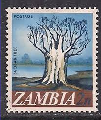 |
| Bob Shop | Zambia - Zambia - 1968 - CTO was listed for 0.00 on 13 Nov at 21:02 by PostagePaid in Kraaifontein (ID:629325273) | 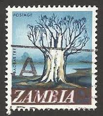 |
| iStock | Baobab Tree Stamp Stock Photo - Download Image Now - Africa, Baobab Tree, Black Background - iStock | 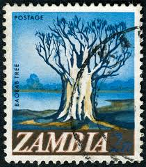 |
| Bob Shop | Zambia - ZAMBIA 1968 Local Motifs - Value in (K)wacha and (N)gwee ULH CV R2 SG 130 was listed for 0.00 on 2 Jun at 14:01 by trevorfrsr in Durban (ID:643073457) | 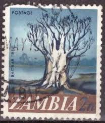 |
| 123RF | ZAMBIA - CIRCA 1968: A Stamp Printed In Zambia, Shows National Museum, Livingstone, Circa 1968 Stock Photo, Picture and Royalty Free Image. Image 64958207. | 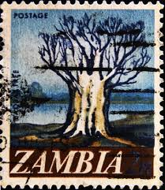 |
| eBay | Zambia Flora Nature Baobab Tree stamp 1968 A-24 | eBay | 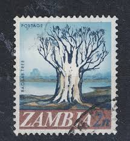 |
| Dreamstime.com | Stamp Zambia Stock Photos - Free & Royalty-Free Stock Photos from Dreamstime | 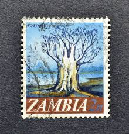 |
| commonwealthstamps.com | Zambia 1968 Decimal Currency SG 130 Fine Used | 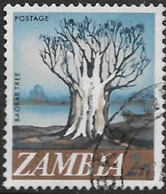 |
| ebid.net | Zambia.SG130 2n Baobab Tree.Fine Used.Sept23a on eBid United States | 218779083 | 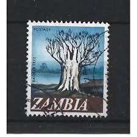 |
| Zambia - Trees on stamps theme. Baobab Tree. | 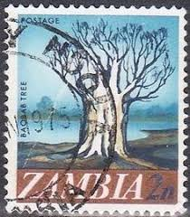 | |
| Baobab Bookshop | Lilongwe | 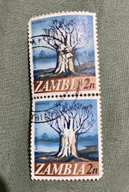 | |
| Shutterstock | Karnal Haryana India -august 13th 2025- Stock Photo 2677658585 | Shutterstock | 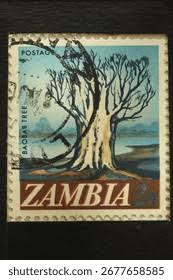 |
| BioOne | Succulents on Stamps | 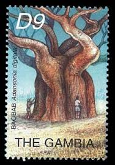 |
| lastdodo.com | Nature Protection 35 (1994) - Botswana - LastDodo | 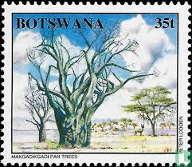 |
| Alamy | Baobab, Sambia, Zambia Stock Photo - Alamy | 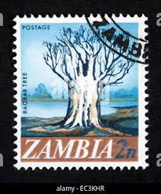 |
| Amazon.com | Amazon.com: MARTÍNEZ - Namibia Travel Guides / African Travel Guides: Books | 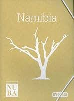 |
| eBay | Kenya,Uganda,Tanzania 205-208,hinged.Mi 193-196. Development Bank,1969.Tree. | eBay | 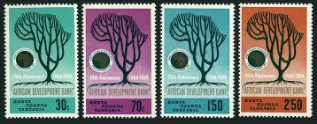 |
| Amazon.jp | Amazon.co.jp: This Is the Tree (Children's Books from Around the World-Africa) : Moss, Miriam, Kennaway, Adrienne: Foreign Language Books | 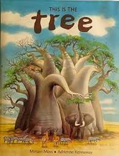 |
| postagestampart.com | 8X10BOTSWANA1_large.jpeg?v=1443035095 | 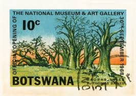 |
| eBay | Individual Rwandan Stamps for sale | eBay | 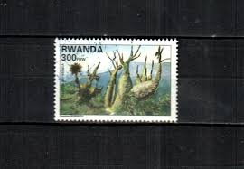 |
| Presto Music | Lewkovitch (composer) (page 1 of 6) | Presto Music | 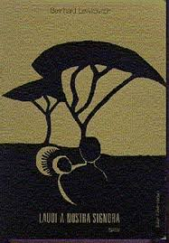 |
| eBay UK | Used Single Zimbabwean Stamps (1965-Now) for sale | eBay UK | 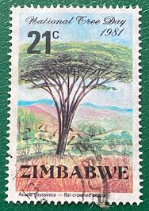 |
| Rosenstiels | The Wanderlust Collection | 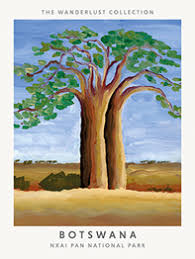 |
| TikTok | TENIOLA ATANDA (@theteniola_atanda) | TikTok | 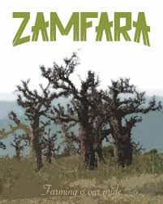 |
| Discogs | The Tie That Binds – Slowly Sinking Under | Releases | Discogs | 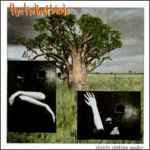 |
| lastdodo.com | Dr. Hendrik F. Verwoerd 2½ (1967) - South-West Africa - LastDodo | 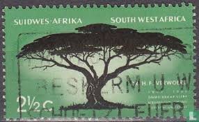 |
| meganet.lt | Congo | 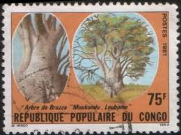 |
| Wine-Searcher | 2020 Halala Afrika Red, Stellenbosch, South Africa | prices, reviews, stores & market trends | 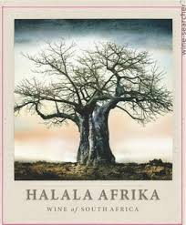 |
| Fandom | Botswana 1968 Opening of the National Museum and Art Gallery | JPP-Stamps Wiki | Fandom | 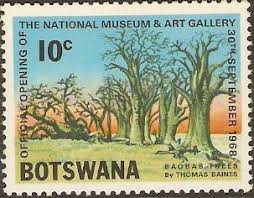 |
| Posting art from every European country, day 21: Hungary. Paintings by Tivadar Csontváry Kosztka (1853-1919) : r/europe | 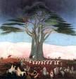 | |
| Rhodesian Study Circle | NATIONAL TREE DAY | 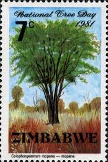 |
| Invaluable.com | Sold at Auction: Keith Henderson, Keith Henderson Baobabs and Baboons | 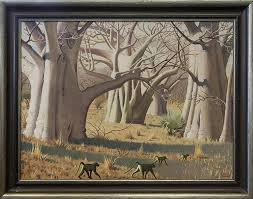 |
| Colnect | Stamp: Acacia (Acacia abyssinica) (Zimbabwe(National Tree Day) Mi:ZW 257,Sn:ZW 444,Yt:ZW 31,Sg:ZW 608 📮 | 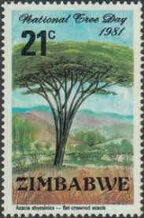 |
| eBay | P.R. CONGO 615 - Baobab Tree "Adansonia digitata" (pb89678) | eBay | 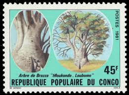 |
| Weebly | FAMOUS' TREE PAINTINGS - Australian Biblical Creation | 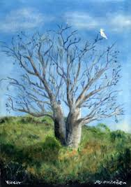 |
| ebid.net | NEW ZEALAND NZ WACKY LETTERBOXES SEA DIVERS HELMET DIE CUT 40c USED SG? on eBid United Kingdom | 216997980 | 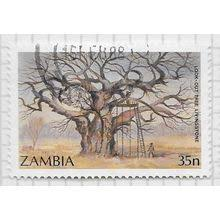 |
| ÖSVLPH | December 2022 - Baobab-Trees - ÖSVLPH | 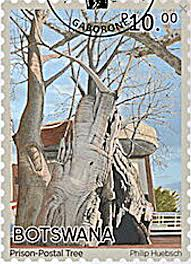 |
| Amazon.in | Buy Tala Book Online at Low Prices in India | Tala Reviews & Ratings - Amazon.in | 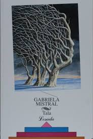 |
| Invaluable.com | Sold at Auction: Enos Namatjira, Enos Namatjira (1920-1966) - Original Watewrcolour | 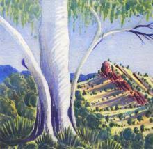 |
| Discovering Zanzibar beyond beaches | 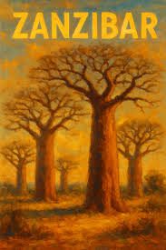 | |
| Rhodesian Study Circle | Postcards: PhotoSafari (Pvt) Ltd – Type IIC - Rhodesian Study Circle | 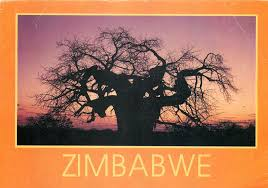 |
| eBay | RWANDA Scott's 1392 ( 2v ) Indigenous Tree F/VF Used Pair ( 1998 ) #9 | eBay | 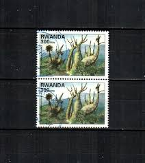 |
| One More Story | This Is the Tree by Miriam Moss | 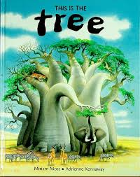 |
| baobabstories.com | Baobab Paintings - Baobab | 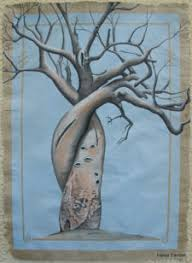 |
| Ruby Lane | Silhouette Sunset Giraffe Safari Batik, Painting on Fabric. For Sale at Ruby Lane | |
| More Vintage Somali Post Stamps 🇸🇴 : r/Somalia | ||
| eBay | RWANDA Scott's 1392 ( 1v ) Indigenous Tree F/VF Used ( 1998 ) #1 | eBay | |
| Media Storehouse | 19th Century Print of Richard Francis Burton. Art Prints, Posters & Puzzles from Fine Art Finder | |
| eBay | VG (Very Good) Greek Stamps for sale | eBay | |
| Moira Risen Prints | Csontvary paintings - Pilgramage to the lonely cedar in Lebanon, allegoric landscape Metal Print by Csontvary Kosztka Tivadar - Moira Risen Prints | |
| eBay | Decimal Rwandan Stamps for sale | eBay | |
| Saatchi Art | The Three Painting by Graham Wallwork | Saatchi Art Spain | |
| Discogs | Touke Discography: Vinyl, CDs, & More | Discogs | |
| Squarespace | Painting Culture Through the Baobab Tree |